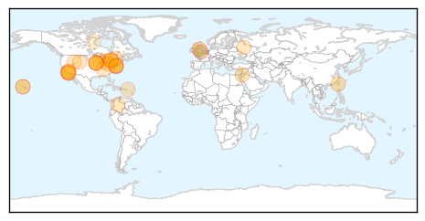
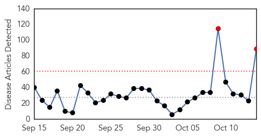
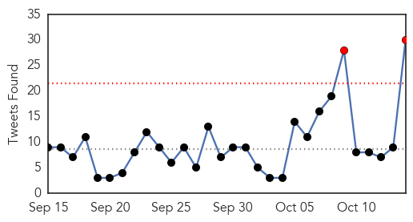

Influenza
30-Day Web Trend
7 alerts, 4 warnings

30-Day Twitter Trend
0 alerts, 0 warnings

Article Locations
Article Confidences
Top Articles:
- 0.998
- The importance of getting a flu shot
- 0.996
- Galion City Health Department urges annual flu vaccines
- 0.995
- Flu season prep may include a call to insurance
- 0.993
- Rhinelander High School to Host Mass Flu Vaccination Clinic
- 0.980
- To Fight The Flu, Call In The Military
- 0.968
- To Fight The Flu, Call In The Military
- 0.956
- Health professionals advise BYU students to get their flu shots – U N I V E R S E
- 0.951
- Expansion of Flu Shot Access Sees MLHU Shut Community Clinics
- 0.926
- China reports two additional H7N9 avian influenza cases in September
- 0.912
- County health chief delivers truths on flu
- 0.907
- Public health encourages flu vaccination
- 0.901
- Inland Bays, Atlantic Ocean, Rehoboth Beach, Lewes, Milton, Dewey Beach, USA
- 0.898
- Today's stories from newspapers in Flamborough
- 0.898
- Today's stories from newspapers in Flamborough
- 0.840
- DOH NEWS RELEASE: Stop flu at school vaccination clinics start today
- 0.821
- Iowa's Harrisvaccines gets bird flu vaccine order from USDA
- 0.806
- Today's stories from newspapers in Caledon
- 0.806
- Today's stories from newspapers in Caledon
- 0.806
- Today's stories from newspapers in Caledon
- 0.806
- Today's stories from newspapers in Caledon
- 0.762
- Stop Flu at School Program Gets Underway
- 0.751
- October 14, 2015 Archives
- 0.751
- October 14, 2015 Archives
- 0.751
- October 14, 2015 Archives
- 0.751
- October 14, 2015 Archives
- 0.751
- October 14, 2015 Archives
- 0.751
- October 13, 2015 Archives
- 0.751
- October 13, 2015 Archives
- 0.667
- Tennessee Department of Health releases Healthcare associated Infections Report for Consumers
- 0.642
- USDA awards bird flu vaccine contracts to two companies
- 0.622
- Global Handwashing Day: protecting against infection with soap and water
- 0.584
- USDA awards first manufacturing contracts for bird flu vaccine stockpile
- 0.542
- Saskatchewan flu shots begin Monday
- 0.503
- Flu shots available for those at 'high risk' of contracting influenza
Top Tweets:
- 0.714
- Post-pandemic influenza A (H1N1) 2009 virus infection in pregnant women in Ceará, Brazil http://t.co/pKtDWw7UVF
Ebola
30-Day Web Trend
2 alerts, 0 warnings

30-Day Twitter Trend
2 alerts, 0 warnings

Article Locations

Article Confidences
Top Articles:
- 1.000
- Ebola virus can linger in semen of survivors for 9 months, study shows
- 1.000
- Ebola after-effects unclear as nurse becomes critically ill
- 1.000
- Ebola nurse Pauline Cafferkey is critically ill
- 1.000
- Ebola found in the semen of some men nine months later
- 1.000
- Ebola Lingers in Semen for Months, Studies Confirm
- 1.000
- Response in Sierra Leone to Ebola Outbreak Saved 40,000 Lives: Study
- 1.000
- Ebola nurse Pauline Cafferkey's rapid decline after being 'cured' leaves experts staggered
- 1.000
- Ebola Virus: Scottish Nurse Pauline Cafferkey 'Critically Ill'
- 1.000
- How Does Ebola Come Back?
- 1.000
- Ebola Beds Prevented 40,000 Deaths
- 0.999
- British Nurse Pauline Cafferkey Now 'Critically Ill' After Her Ebola Relapse Worsens
- 0.999
- U.S. still vulnerable a year after Ebola outbreak, doctors say
- 0.999
- Ebola survivors can carry virus in their sperm ‘for nine months’
- 0.999
- Ebola nurse Pauline Cafferkey now critically ill
- 0.999
- Delivery Of 3,000 Ebola Treatment Beds Prevented 40,000 Deaths In Sierra Leone
- 0.999
- Ebola May Stay in Survivors' Semen for Many Months
- 0.999
- British Ebola nurse now 'critically ill'
- 0.999
- Johnson & Johnson Announces Start of Clinical Trial of Ebola Vaccine Regimen …
- 0.999
- UK's first Ebola patient 'critically ill,' in isolation
- 0.999
- British Ebola nurse Pauline Cafferkey 'critically ill'
- 0.999
- Does 'reactivated' Ebola pose a threat?
- 0.998
- British Ebola nurse Pauline Cafferkey critically ill
- 0.998
- British Ebola nurse Pauline Cafferkey critically ill
- 0.998
- British Ebola nurse now 'critically ill': hospital
- 0.998
- Ebola nurse Pauline Cafferkey 'critically ill' after condition deteriorates, hospital says
- 0.997
- Ebola experts unsure how many could be hit by return of disease as Pauline Cafferkey's condition deteriorates
- 0.997
- Ebola nurse Pauline Cafferkey in critical condition at London hospital isolation unit
- 0.997
- Ebola, Epic, the New York Times and the Culture of Accountability
- 0.997
- Give Me Liberty
- 0.996
- UK's first Ebola victim readmitted to hospital, deemed 'critically ill'
- 0.996
- Ebola lingers in semen for nine months
- 0.995
- Pauline Cafferkey, Nurse With Ebola Complications, Is 'Critically Ill'
- 0.994
- Ebola-hit nurse 'critically ill' in London hospital
- 0.994
- Ebola-hit nurse 'critically ill' in London hospital
- 0.991
- British Nurse Treated for Ebola Now 'Critically Ill'
- 0.989
- Nurse Pauline Cafferkey critically ill with Ebola relapse
- 0.987
- Nurse shares experience battling Ebola
- 0.984
- Ebola nurse Pauline Cafferkey 'critically ill' after condition deteriorates
- 0.982
- ‘Critically ill': Condition of British nurse thought cured of Ebola downgraded
- 0.982
- Pauline Cafferkey now CRITICALLY ill due to Ebola complications
- 0.981
- Ebola Virus Stays in Semen Months After Recovery
- 0.980
- Scottish nurse critically ill with relapse of Ebola
- 0.980
- clinical trial of preventive Ebola vaccine regimen in Sierra Leone
- 0.978
- UK nurse critically ill after Ebola infection returns
- 0.978
- China To Mass Produce Ebola Vaccine Developed By Chinese Military Scientists
- 0.976
- British Ebola nurse now 'critically ill'
- 0.974
- Ebola nurse now 'critically ill'
- 0.973
- Condition of hospitalized Ebola nurse in UK worsens
- 0.973
- Ebola nurse Pauline Cafferkey now 'critically ill'
- 0.973
- Ebola nurse Pauline Cafferkey now 'critically ill'
Showing top 50 articles...
Top Tweets:
- 0.996
- Ebola Virus Detector Performs Well - Science Times http://t.co/WHXchuvLjX ebola EVD
- 0.982
- Ebola virus decimates wild gorilla population - The Australian http://t.co/IFBPYVXFS5 ebola EVD
- 0.972
- .@EbolaPhone Dunno if 1 Ebola infection = immunity. Ebola Zaire vaccine isn't cross protective - why would infection be?
- 0.955
- New evidence that parts of Ebola virus hide in semen for months - http://t.co/9ktkjmoRWQ ebola
- 0.953
- Ebola in Sierra Leone: how worried are people? - BBC News http://t.co/77Ib1IMVvK ebola EVD
- 0.950
- U.S. still vulnerable a year after Ebola outbreak, doctors say - Washington Times http://t.co/UNn8yKyprY ebola EVD
- 0.940
- Introduction of Ebola treatment beds reduces large number of deaths, Ebola ... - http://t.co/A9wAAOLz1c http://t.co/EXIHJL0DUy ebola EVD
- 0.933
- UK Nurse With Ebola Critically Ill Again - WebMD http://t.co/dFKZe4V08e ebola EVD
- 0.929
- Ebola lingers in semen for nine months - http://t.co/ITTkezZsTD ebola
- 0.926
- Ebola Lingers in Semen for Months, Studies Confirm - http://t.co/Qb2yZPEHVZ ebola
- 0.922
- As of Sunday 11 October, no positive Ebola cases were confirmed in West Africa. However, high-risk contacts under observation in Guinea.
- 0.920
- If we had acted just a month earlier, we could have halved the number of Ebola ... - Quartz http://t.co/TXmXYUMJPb ebola EVD
- 0.916
- Ebola May Stay in Survivors' Semen for Many Months - http://t.co/ZiqxEgshb2 ebola
- 0.915
- Ebola May Persist This Long in Survivors' Semen - http://t.co/YZzf3OQWVX ebola
- 0.904
- Scottish Nurse Treated for Ebola Complications in Critically Ill Condition - Newsweek http://t.co/amvm4zeY2Z ebola EVD
- 0.895
- Dr. Nancy Snyderman on Ebola scandal: 'People wanted me dead' - Fortune http://t.co/7h7FYd6Wl2 ebola EVD
- 0.887
- Ebola survivors can carry virus in their sperm 'for nine months' - The Guardian http://t.co/9mx8KmPYQN ebola EVD
- 0.887
- Ebola may persist in semen for nine months - http://t.co/u2eegW9AGb ebola
- 0.887
- Australian Ebola clinic wins award - Yahoo7 News http://t.co/lsi9ZSi1E9 ebola EVD
- 0.882
- New in EID journal: Ebola in West Africa- CDC’s role in epidemic detection, control, and prevention: http://t.co/DNiLGIy9wj
- 0.880
- UK's first Ebola patient 'critically ill,' in isolation - CNN http://t.co/ilIQIJjaqC ebola EVD
- 0.867
- China to mass produce Ebola vaccine - Xinhua http://t.co/901vX5xr9B ebola EVD
- 0.866
- In 3 Ebola affected W. African countries, CDC & partners trained >25,000 health care workers in infection control http://t.co/GYbXouFzQd
- 0.863
- Scottish nurse who recovered from Ebola critically ill - USA TODAY http://t.co/N7YAiS35e7 ebola EVD
- 0.860
- Ebola lingers in semen for nine months - BBC News http://t.co/0P5a4kBSkW ebola EVD
- 0.855
- In wake of Ebola epidemic, Margaret Chan wants countries to put their money ... - Science /AAAS http://t.co/n9ilZr4aiX ebola EVD
- 0.854
- We Now Know More About Sexually Transmitted Ebola - TIME http://t.co/Fn8jxTuIgU ebola EVD
- 0.841
- We Now Know More About Sexually Transmitted Ebola - http://t.co/Qhc6m1AIKz ebola
- 0.831
- Active Compound Prevents Ebola Virus In Monkeys, Now Undergoes Phase 1 ... - Youth Health Magzine http://t.co/7oY4mmxSNX
- 0.821
- Condition of hospitalized Ebola nurse in UK worsens - AOL News http://t.co/4DitmRbYsL ebola EVD
- 0.794
- Vaccine offers new hope for gorrillas ravaged by ebola - The Times (subscription) http://t.co/kT2Xxa34ZS ebola EVD
- 0.778
- Chinese firm says plans to 'mass produce' Ebola vaccine - Reuters http://t.co/DJ7PU0Bztm ebola EVD
- 0.768
- RT: Study: Most health workers infected in non-Ebola settings http://t.co/ihjr2eep2G
- 0.754
- 'Critically ill': Condition of British nurse thought cured of Ebola downgraded - Washington Post http://t.co/MumHh2XFJ4 ebola EVD
- 0.741
- China To Mass Produce Ebola Vaccine Developed By Chinese Military Scientists - International Busin... http://t.co/OwzoZjkXb6 ebola EVD
- 0.738
- Introduction of Ebola treatment beds reduces large number of deaths, Ebola ... - http://t.co/4phXncKnif http://t.co/9Es7mHBNko
- 0.736
- Are post-Ebola reconstruction efforts neglecting public health laboratory systems?t http://t.co/ho65kHoqfN
- 0.731
- AFD Blog `@WHO: Study Shows Ebola Virus Fragments May Be Detectable In Semen For > 9 Months' http://t.co/k4LLiztjgZ
- 0.729
- Chinese firm to 'mass produce' Ebola vaccine - Citizen TV (press release) http://t.co/tFFCECPdw3 ebola EVD
- 0.701
- The only upside of the awful West African Ebola outbreak is much will be learned, including this about survivors. https://t.co/YZjTiI2IxK
- 0.673
- How many other Ebola survivors in West Africa have fallen critically ill or died without public knowledge? Urgent need for investigation.
- 0.658
- RT: Ebola region goes 2 weeks with no cases; UK nurse critical http://t.co/5XxjeFUOKD
- 0.651
- For 2nd week running, there are no new Ebola cases. Not out of the woods, tho; contacts of relapsed UK case watched http://t.co/7SvEWxZn7U
- 0.629
- RT: You (the world) can't help fix a post- Ebola health system in SierraLeone or even Guinea and Liberia if you... http://…
- 0.612
- Interesting Ebola research answers some questions, raises some others. 1) yes, some male survivors have virus in their semen for months 1/n
- 0.600
- Ebola found in the semen of some men nine months later - The Verge http://t.co/w6p0xed84J ebola EVD
- 0.589
- How the “polio surge” in Nigeria helped stop Ebola - Fortune http://t.co/sCXVcG97i8 ebola EVD
- 0.583
- British Ebola nurse Pauline Cafferkey now 'critically ill' - http://t.co/VxCDJoj5yK http://t.co/PN7xnwtBlU ebola EVD
- 0.580
- U.S. still vulnerable a year after Ebola outbreak, doctors say - Washington Times http://t.co/NbQVCWKiFN
- 0.553
- Ebola was such a massive colossus http://t.co/GD9iZuJq8J
Showing top 50 tweets...